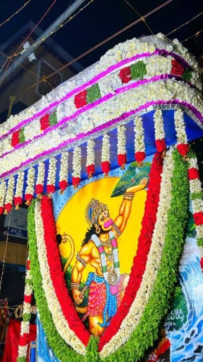
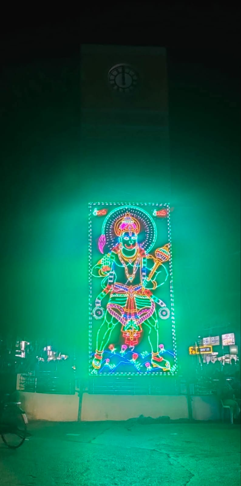
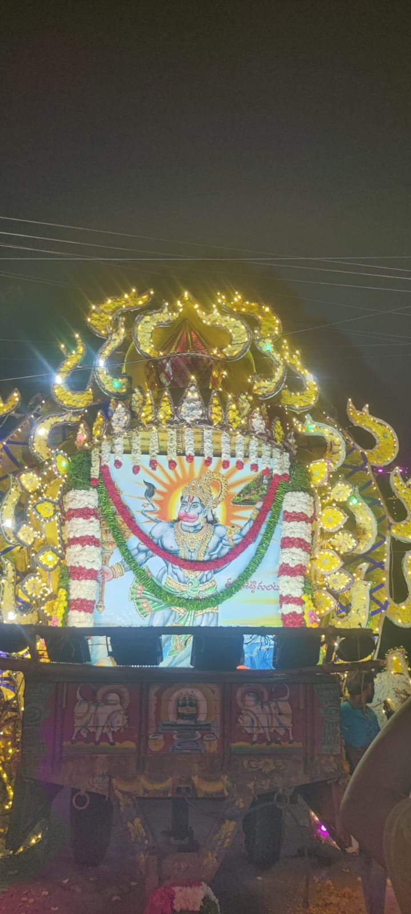
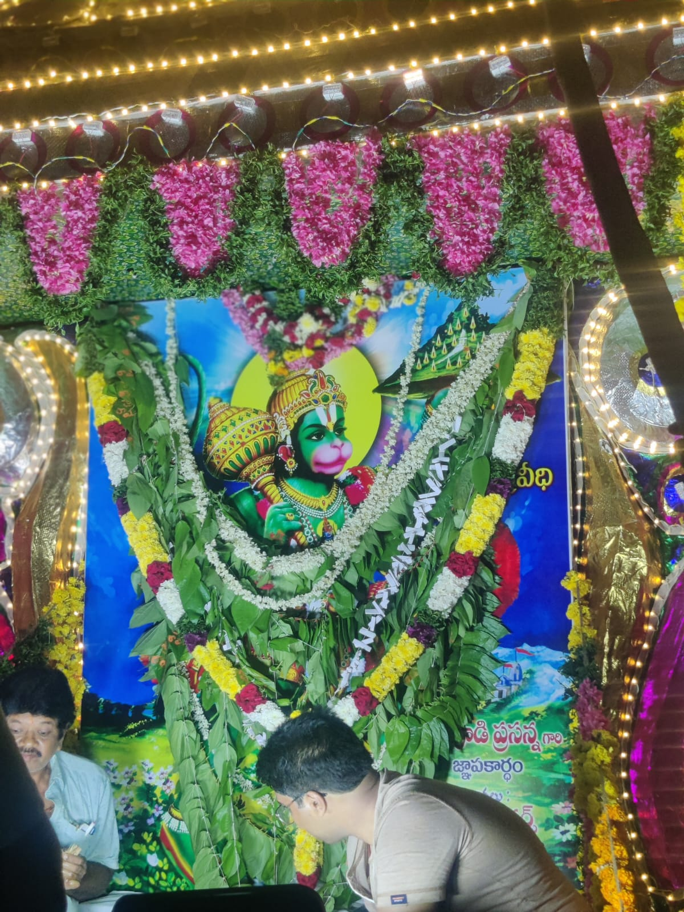

01
EVENING
The Streets Glow
Decorative lights, festive arches and glowing streets create a warm invitation to the night.
A TRADITIONAL AND DEVOTIONAL CELEBRATION
THE SACRED FLAG FESTIVAL OF GUDUR
10 OCTOBER 2026
GUDUR • ANDHRA PRADESH
In the Divine Presence of Lord Hanuman
A Celebration of Faith • Tradition • Togetherness
A SACRED INVITATION
With hearts filled with devotion, we warmly invite devotees, families, friends and the local community to come together for the sacred celebration of Gudur Janda Panduga.
In the divine presence of Lord Hanuman, the sacred Janda becomes a symbol of faith, strength and togetherness. As the streets of Gudur come alive with music, lights, traditions and celebration, generations gather to share in the spirit of the festival.
Join us in honoring tradition, celebrating community and experiencing the vibrant Janda atmosphere that makes this occasion special.
“ Strength in Faith.
Power in Devotion. ”
THE HEART OF THE CELEBRATION
WHERE FAITH RISES
The sacred flag stands as a powerful visual symbol of devotion and the collective spirit of the festival.
When the Janda rises, devotion brings the community together in one shared celebration.
A sacred flag-hoisting ceremony forms the visual heart of Gudur Janda Panduga, carrying the spirit of devotion, tradition and togetherness through the celebration.
ONE TOWN • ONE CELEBRATION
The Spirit of the Janda Fills Every Street
THE VIBRANT HEART OF GUDUR
When the streets glow, the celebration begins.
Decorative lights, festive arches and glowing streets create a warm invitation to the night.
A vibrant community procession carries the spirit of the sacred Janda through the celebration.
Traditional music, folk performances, Kolatam and energetic gatherings fill the festive atmosphere.
Devotion, music, lights and community celebration keep the spirit of Janda alive through the night.
As the celebration reaches its closing moments, its memories continue from one generation to the next.
MEMORIES OF THE CELEBRATION
A glimpse of devotion, tradition, lights and togetherness.




WITH FAITH • WITH LOVE • WITH DEVOTION
WITH LOVE & DEVOTION